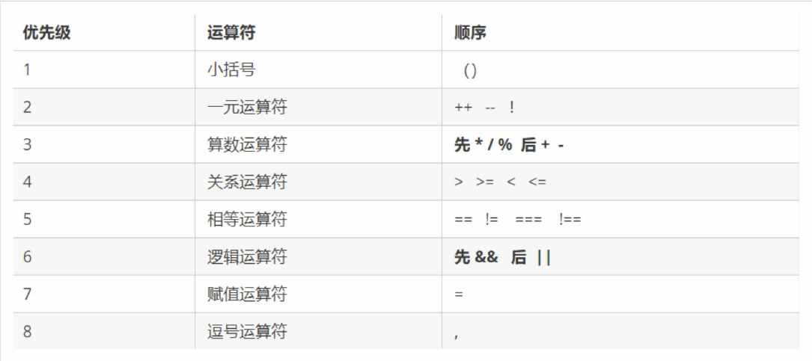
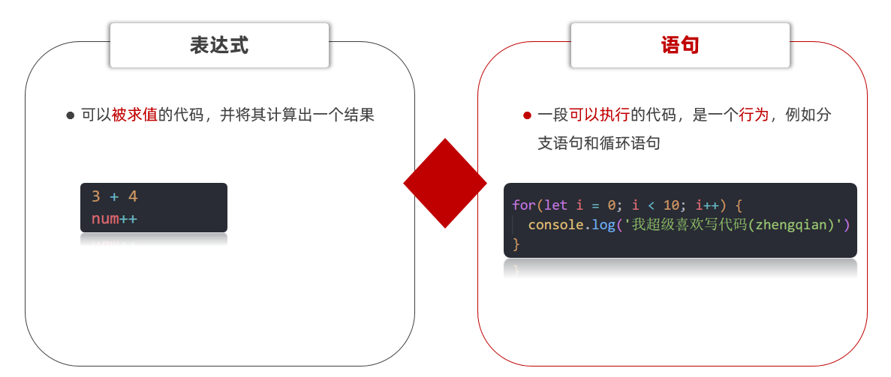
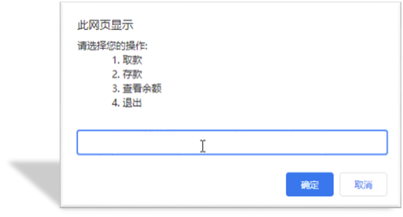

本系列：（一）JavaScript基础 第1-2天 · （二）JavaScript基础 第3-5天 · （三）Web APIs 第1-3天 · （四）Web APIs 第4-6天与个人实战
JavaScript 基础 - 第1天
了解变量、数据类型、运算符等基础概念，能够实现数据类型的转换，结合四则运算体会如何编程。
体会现实世界中的事物与计算机的关系
理解什么是数据并知道数据的分类
理解变量存储数据的“容器”
掌握常见运算符的使用，了解优先级关系
知道 JavaScript 数据类型隐式转换的特征
介绍
掌握 JavaScript 的引入方式，初步认识 JavaScript 的作用
引入方式
JavaScript 程序不能独立运行，它需要被嵌入 HTML 中，然后浏览器才能执行 JavaScript 代码。通过 script 标签将 JavaScript 代码引入到 HTML 中，有两种方式：
内部方式
通过 script 标签包裹 JavaScript 代码
1 2 3 4 5 6 7 8 9 10 11 12 13 <!DOCTYPE html > <html lang ="en" > <head > <meta charset ="UTF-8" > <title > JavaScript 基础 - 引入方式</title > </head > <body > <script > alert ('嗨，欢迎来传智播学习前端技术！' ) </script > </body > </html >
外部形式
一般将 JavaScript 代码写在独立的以 .js 结尾的文件中，然后通过 script 标签的 src 属性引入
1 2 document .write ('嗨，欢迎来传智播学习前端技术！' )
1 2 3 4 5 6 7 8 9 10 11 <!DOCTYPE html > <html lang ="en" > <head > <meta charset ="UTF-8" > <title > JavaScript 基础 - 引入方式</title > </head > <body > <script src ="demo.js" > </script > </body > </html >
如果 script 标签使用 src 属性引入了某 .js 文件，那么 标签的代码会被忽略！！！如下代码所示：
1 2 3 4 5 6 7 8 9 10 11 12 13 14 <!DOCTYPE html > <html lang ="en" > <head > <meta charset ="UTF-8" > <title > JavaScript 基础 - 引入方式</title > </head > <body > <script src ="demo.js" > alert (666 ); </script > </body > </html >
注释和结束符
通过注释可以屏蔽代码被执行或者添加备注信息，JavaScript 支持两种形式注释语法：
单行注释
使用 // 注释单行代码
1 2 3 4 5 6 7 8 9 10 11 12 13 14 15 16 <!DOCTYPE html > <html lang ="en" > <head > <meta charset ="UTF-8" > <title > JavaScript 基础 - 注释</title > </head > <body > <script > document .write ('嗨，欢迎来传智播学习前端技术！' ); </script > </body > </html >
多行注释
使用 /* */ 注释多行代码
1 2 3 4 5 6 7 8 9 10 11 12 13 14 15 16 17 18 19 <!DOCTYPE html > <html lang ="en" > <head > <meta charset ="UTF-8" > <title > JavaScript 基础 - 注释</title > </head > <body > <script > document .write ('嗨，欢迎来传智播学习前端技术！' ) </script > </body > </html >
注：编辑器中单行注释的快捷键为 ctrl + /
结束符
在 JavaScript 中 ; 代表一段代码的结束，多数情况下可以省略 ; 使用回车（enter）替代。
1 2 3 4 5 6 7 8 9 10 11 12 13 14 15 16 <!DOCTYPE html > <html lang ="en" > <head > <meta charset ="UTF-8" > <title > JavaScript 基础 - 结束符</title > </head > <body > <script > alert(1); alert(2); alert(1) alert(2) </script > </body > </html >
实际开发中有许多人主张书写 JavaScript 代码时省略结束符 ;
输入和输出
输出和输入也可理解为人和计算机的交互，用户通过键盘、鼠标等向计算机输入信息，计算机处理后再展示结果给用户，这便是一次输入和输出的过程。
举例说明：如按键盘上的方向键，向上/下键可以滚动页面，按向上/下键这个动作叫作输入，页面发生了滚动了这便叫输出。
输出
JavaScript 可以接收用户的输入，然后再将输入的结果输出：
alert()、document.wirte()
以数字为例，向 alert() 或 document.write()输入任意数字，他都会以弹窗形式展示（输出）给用户。
控制台输出为console.log()
输入
向 prompt() 输入任意内容会以弹窗形式出现在浏览器中，一般提示用户输入一些内容。
1 2 3 4 5 6 7 8 9 10 11 12 13 14 15 16 17 18 <!DOCTYPE html > <html lang ="en" > <head > <meta charset ="UTF-8" > <title > JavaScript 基础 - 输入输出</title > </head > <body > <script > document .write ('要输出的内容' ) alert ('要输出的内容' ); prompt ('请输入您的姓名:' ) </script > </body > </html >
变量
理解变量是计算机存储数据的“容器”，掌握变量的声明方式
变量是计算机中用来存储数据的“容器”，它可以让计算机变得有记忆，通俗的理解变量就是使用【某个符号】来代表【某个具体的数值】（数据）
1 2 3 4 5 6 7 8 9 10 11 12 13 14 15 <script > x = 5 y = 6 num = prompt ('请输入一数字!' ) alert (num) document .write (num) </script >
声明
声明(定义)变量有两部分构成：声明关键字、变量名（标识）
1 2 3 4 5 6 7 8 9 10 11 12 13 14 15 16 17 <!DOCTYPE html > <html lang ="en" > <head > <meta charset ="UTF-8" > <title > JavaScript 基础 - 声明和赋值</title > </head > <body > <script > let age </script > </body > </html >
关键字是 JavaScript 中内置的一些英文词汇（单词或缩写），它们代表某些特定的含义，如 let 的含义是声明变量的，看到 let 后就可想到这行代码的意思是在声明变量，如 let age;
let 和 var 都是 JavaScript 中的声明变量的关键字，推荐使用 let 声明变量！！！
赋值
声明（定义）变量相当于创造了一个空的“容器”，通过赋值向这个容器中添加数据。
1 2 3 4 5 6 7 8 9 10 11 12 13 14 15 16 17 18 19 20 21 22 23 24 <!DOCTYPE html > <html lang ="en" > <head > <meta charset ="UTF-8" > <title > JavaScript 基础 - 声明和赋值</title > </head > <body > <script > let age age = 18 document .write (age) let str = 'hello world!' alert (str); </script > </body > </html >
关键字
JavaScript 使用专门的关键字 let 和 var 来声明（定义）变量，在使用时需要注意一些细节：
以下是使用 let 时的注意事项：
允许声明和赋值同时进行
不允许重复声明
允许同时声明多个变量并赋值
JavaScript 中内置的一些关键字不能被当做变量名
以下是使用 var 时的注意事项：
可以先使用 再声明（不合理）
允许声明和赋值同时进行
允许重复声明
允许同时声明多个变量并赋值
比如变量提、全局变量、没有块级作用域等等
大部分情况使用 let 和 var 区别不大，但是 let 相较 var 更严谨，因此推荐使用 let，后期会更进一步介绍二者间的区别。
变量名命名规则
关于变量的名称（标识符）有一系列的规则需要遵守：
只能是字母、数字、下划线、$，且不能能数字开头
字母区分大小写，如 Age 和 age 是不同的变量
JavaScript 内部已占用于单词（关键字或保留字）不允许使用
尽量保证变量具有一定的语义，见字知义
注：所谓关键字是指 JavaScript 内部使用的词语，如 let 和var，保留字是指 JavaScript 内部目前没有使用的词语，但是将来可能会使用词语。
1 2 3 4 5 6 7 8 9 10 11 12 13 14 15 16 17 18 19 20 21 <!DOCTYPE html > <html lang ="en" > <head > <meta charset ="UTF-8" > <title > JavaScript 基础 - 变量名命名规则</title > </head > <body > <script > let age = 18 let age1 = 18 let _age = 18 let $age = 18 let Age = 24 let int = 123 </script > </body > </html >
常量
概念：使用 const 声明的变量称为“常量”。
使用场景：当某个变量永远不会改变的时候，就可以使用 const 来声明，而不是let。
命名规范：和变量一致
注意： 常量不允许重新赋值,声明的时候必须赋值（初始化）
数据类型
计算机世界中的万事成物都是数据。
计算机程序可以处理大量的数据，为了方便数据的管理，将数据分成了不同的类型：
注：通过typeof关键字检测数据类型，它支持两种语法形式：
作为运算符：typeof x (常用的写法)
函数形式：typeof(x)
1 2 3 4 5 6 7 8 9 10 11 12 13 14 <!DOCTYPE html > <html lang ="en" > <head > <meta charset ="UTF-8" > <title > JavaScript 基础 - 数据类型</title > </head > <body > <script > document .write (typeof 1 ) </script > </body > </html >
数值类型
即我们数学中学习到的数字，可以是整数、小数、正数、负数
1 2 3 4 5 6 7 8 9 10 11 12 13 14 15 16 17 18 19 <!DOCTYPE html > <html lang ="en" > <head > <meta charset ="UTF-8" > <title > JavaScript 基础 - 数据类型</title > </head > <body > <script > let score = 100 let price = 12.345 let temperature = -40 document .write (typeof score) document .write (typeof price) document .write (typeof temperature) </script > </body > </html >
JavaScript 中的数值类型与数学中的数字是一样的，分为正数、负数、小数等。
字符串类型
通过单引号（ ''） 、双引号（ ""）或反引号包裹的数据都叫字符串，单引号和双引号没有本质上的区别，推荐使用单引号。
注意事项：
无论单引号或是双引号必须成对使用
单引号/双引号可以互相嵌套，但是不以自已嵌套自已
必要时可以使用转义符 \，输出单引号或双引号
1 2 3 4 5 6 7 8 9 10 11 12 13 14 15 16 17 18 19 20 <!DOCTYPE html > <html lang ="en" > <head > <meta charset ="UTF-8" > <title > JavaScript 基础 - 数据类型</title > </head > <body > <script > let user_name = '小明' let gender = "男" let str = '123' let str1 = '' documeent.write (typeof user_name) documeent.write (typeof gender) documeent.write (typeof str) </script > </body > </html >
布尔类型
表示肯定或否定时在计算机中对应的是布尔类型数据，它有两个固定的值 true 和 false，表示肯定的数据用 true，表示否定的数据用 false。
1 2 3 4 5 6 7 8 9 10 11 12 13 14 15 16 17 <!DOCTYPE html > <html lang ="en" > <head > <meta charset ="UTF-8" > <title > JavaScript 基础 - 数据类型</title > </head > <body > <script > let isCool = true isCool = false document .write (typeof isCool) </script > </body > </html >
undefined
未定义是比较特殊的类型，只有一个值 undefined，只声明变量，不赋值的情况下，变量的默认值为 undefined，一般很少【直接】为某个变量赋值为 undefined。
1 2 3 4 5 6 7 8 9 10 11 12 13 14 15 <!DOCTYPE html > <html lang ="en" > <head > <meta charset ="UTF-8" > <title > JavaScript 基础 - 数据类型</title > </head > <body > <script > let tmp; document .write (typeof tmp) </script > </body > </html >
注：JavaScript 中变量的值决定了变量的数据类型。
类型转换
理解弱类型语言的特征，掌握显式类型转换的方法
在 JavaScript 中数据被分成了不同的类型，如数值、字符串、布尔值、undefined，在实际编程的过程中，不同数据类型之间存在着转换的关系。
隐式转换
某些运算符被执行时，系统内部自动将数据类型进行转换，这种转换称为隐式转换。
1 2 3 4 5 6 7 8 9 10 11 12 13 14 15 16 17 18 19 20 21 22 23 24 25 26 27 28 <!DOCTYPE html > <html lang ="en" > <head > <meta charset ="UTF-8" > <title > JavaScript 基础 - 隐式转换</title > </head > <body > <script > let num = 13 let num2 = '2' console .log (num + num2) console .log (num - num2) let a = prompt ('请输入一个数字' ) let b = prompt ('请再输入一个数字' ) alert (a + b); </script > </body > </html >
注：数据类型的隐式转换是 JavaScript 的特征，后续学习中还会遇到，目前先需要理解什么是隐式转换。
补充介绍模板字符串的拼接的使用
显式转换
编写程序时过度依靠系统内部的隐式转换是不严禁的，因为隐式转换规律并不清晰，大多是靠经验总结的规律。为了避免因隐式转换带来的问题，通常根逻辑需要对数据进行显示转换。
Number
通过 Number 显示转换成数值类型，当转换失败时结果为 NaN（Not a Number）即不是一个数字。
注：NaN也是number类型的数据，代表非数字
1 2 3 4 5 6 7 8 9 10 11 12 13 14 15 16 17 18 19 20 21 22 23 24 25 26 <!DOCTYPE html > <html lang ="en" > <head > <meta charset ="UTF-8" > <title > JavaScript 基础 - 隐式转换</title > </head > <body > <script > let t = '12' let f = 8 t = Number (t) console .log (t + f) let str = 'hello' console .log (Number (str)) </script > </body > </html >
JavaScript 基础 - 第2天
理解什么是流程控制，知道条件控制的种类并掌握其对应的语法规则，具备利用循环编写简易ATM取款机程序能力
运算符
算术运算符
数字是用来计算的，比如：乘法 * 、除法 / 、加法 + 、减法 - 等等，所以经常和算术运算符一起。
算术运算符：也叫数学运算符，主要包括加、减、乘、除、取余（求模）等
运算符
作用
+
求和
-
求差
*
求积
/
求商
% 取模（取余数），开发中经常用于作为某个数字是否被整除
注意：在计算失败时，显示的结果是 NaN （not a number）
1 2 3 4 5 6 7 8 9 10 11 12 13 14 15 16 console .log (1 + 2 * 3 / 2 ) let num = 10 console .log (num + 10 ) console .log (num + num) console .log (4 % 2 ) console .log (6 % 3 ) console .log (5 % 3 ) console .log (3 % 5 ) console .log ('pink老师' - 2 )console .log ('pink老师' * 2 )console .log ('pink老师' + 2 )
赋值运算符
赋值运算符：对变量进行赋值的运算符
= 将等号右边的值赋予给左边, 要求左边必须是一个容器
运算符
作用
+=
加法赋值
-+
减法赋值
*=
乘法赋值
/=
除法赋值
%=
取余赋值
1 2 3 4 5 6 7 8 <script> let num = 1 num += 3 console .log (num)</script>
自增/自减运算符
符号
作用
说明
++
自增
变量自身的值加1，例如: x++
--
自减
变量自身的值减1，例如: x--
++在前和++在后在单独使用时二者并没有差别，而且一般开发中我们都是独立使用
++在后（后缀式）我们会使用更多
注意：
只有变量能够使用自增和自减运算符
++、-- 可以在变量前面也可以在变量后面，比如: x++ 或者 ++x
1 2 3 4 5 6 7 8 9 10 11 12 13 14 15 16 17 18 19 20 21 22 <script> let i = 1 console .log (i++ + ++i + i) </script>
前置自增：先自加再使用（记忆口诀：++在前 先加）
后置自增：先使用再自加（记忆口诀：++在后 后加）
比较运算符
使用场景：比较两个数据大小、是否相等，根据比较结果返回一个布尔值（true / false）
运算符
作用
>
左边是否大于右边
<
左边是否小于右边
>=
左边是否大于或等于右边
<=
左边是否小于或等于右边
===
左右两边是否类型和值都相等（重点）
==
左右两边值是否相等
!=
左右值不相等
!==
左右两边是否不全等
注意：尽量不要比较小数，因为小数有精度问题！
1 2 3 4 5 6 7 8 9 10 11 12 13 14 15 16 17 18 19 <script> console .log (3 > 5 ) console .log (3 >= 3 ) console .log (2 == 2 ) console .log (2 == '2' ) console .log (2 === '2' ) console .log (NaN === NaN ) console .log (2 !== '2' ) console .log (2 != '2' ) console .log ('-------------------------' ) console .log ('a' < 'b' ) console .log ('aa' < 'ab' ) console .log ('aa' < 'aac' ) console .log ('-------------------------' ) </script>
逻辑运算符
使用场景：可以把多个布尔值放到一起运算，最终返回一个布尔值
符号
名称
日常读法
特点
口诀
&&
逻辑与
并且
符号两边有一个假的结果为假
一假则假
||
逻辑或
或者
符号两边有一个真的结果为真
一真则真
!
逻辑非
取反
true变false false变true
真变假，假变真
A
B
A && B
A || B
!A
false
false
false
false
true
false
true
false
true
true
true
false
false
true
false
true
true
true
true
false
1 2 3 4 5 6 7 8 9 10 11 12 13 14 15 16 17 18 19 20 21 22 <script> console .log (true && true ) console .log (false && true ) console .log (3 < 5 && 3 > 2 ) console .log (3 < 5 && 3 < 2 ) console .log ('-----------------' ) console .log (true || true ) console .log (false || true ) console .log (false || false ) console .log ('-----------------' ) console .log (!true ) console .log (!false ) console .log ('-----------------' ) let num = 6 console .log (num > 5 && num < 10 ) console .log ('-----------------' ) </script>
运算符优先级

逻辑运算符优先级： ！> && > ||
语句
表达式和语句

程序三大控制语句：顺序结构、分支结构、循环结构。
分支语句
分支语句可以根据条件判定真假，来选择性的执行想要的代码
分支语句包含：
if分支语句（重点）
三元运算符
switch语句
if 分支语句
语法：
小括号内的条件结果是布尔值，为 true 时，进入大括号里执行代码；为false，则不执行大括号里面代码
小括号内的结果若不是布尔类型时，会发生类型转换为布尔值，类似Boolean()
如果大括号只有一个语句，大括号可以省略，但是，俺们不提倡这么做~
1 2 3 4 5 6 7 8 9 10 11 12 13 14 15 16 17 18 19 20 21 22 23 24 25 26 27 28 29 30 31 32 33 <script> let score = +prompt ('请输入成绩' ) if (score >= 700 ) { alert ('恭喜考入黑马程序员' ) } console .log ('-----------------' ) </script>
if双分支语句
如果有两个条件的时候，可以使用 if else 双分支语句
1 2 3 4 5 if (条件表达式){ } else { }
例如：
1 2 3 4 5 6 7 8 9 10 11 <script> let uname = prompt ('请输入用户名:' ) let pwd = prompt ('请输入密码:' ) if (uname === 'pink' && pwd === '123456' ) { alert ('恭喜登录成功' ) } else { alert ('用户名或者密码错误' ) } </script>
if 多分支语句
使用场景： 适合于有多个条件的时候
1 2 3 4 5 6 7 8 9 10 11 12 13 14 <script> let score = +prompt ('请输入成绩：' ) if (score >= 90 ) { alert ('成绩优秀，宝贝，你是我的骄傲' ) } else if (score >= 70 ) { alert ('成绩良好，宝贝，你要加油哦~~' ) } else if (score >= 60 ) { alert ('成绩及格，宝贝，你很危险~' ) } else { alert ('成绩不及格，宝贝，我不想和你说话，我只想用鞭子和你说话~' ) } </script>
三元运算符（三元表达式）
使用场景 ： 一些简单的双分支，可以使用 三元运算符（三元表达式），写起来比 if else双分支 更简单
符号 ：? 与 : 配合使用
语法：
例如：
1 2 3 4 5 6 7 8 9 10 11 12 13 14 15 16 17 18 19 20 21 22 console .log (5 < 3 ? '真的' : '假的' )let num = prompt ('请您输入一个数字:' )num = num >= 10 ? num : 0 + num alert (num)
switch语句（了解）
使用场景： 适合于有多个条件的时候，也属于分支语句，大部分情况下和 if多分支语句 功能相同
注意：
switch case语句一般用于等值判断, if适合于区间判断
switchcase一般需要配合break关键字使用 没有break会造成case穿透
if 多分支语句开发要比switch更重要，使用也更多
例如：
1 2 3 4 5 6 7 8 9 10 11 12 13 14 15 16 17 18 19 20 21 22 23 24 25 26 27 28 29 30 <script> switch (2 ) { case 1 : console .log ('您选择的是1' ) break case 2 : console .log ('您选择的是2' ) break case 3 : console .log ('您选择的是3' ) break default : console .log ('没有符合条件的' ) } </script>
断点调试
作用： 学习时可以帮助更好的理解代码运行，工作时可以更快找到bug
浏览器打开调试界面
按F12打开开发者工具
点到源代码一栏 （ sources ）
选择代码文件
断点： 在某句代码上加的标记就叫断点，当程序执行到这句有标记的代码时会暂停下来
循环语句
使用场景：重复执行 指定的一段代码，比如我们想要输出10次 ‘我学的很棒’
学习路径：
1.while循环
2.for 循环（重点）
while循环
while : 在…. 期间， 所以 while循环 就是在满足条件期间，重复执行某些代码。
语法：
例如：
1 2 3 4 5 6 7 8 let i = 1 while (i <= 3 ) { document .write ('月薪过万不是梦，毕业时候见英雄~<br>' ) i++ }
循环三要素：
1.初始值 （经常用变量）
2.终止条件
3.变量的变化量
例如：
1 2 3 4 5 6 7 8 9 10 11 12 13 14 15 16 17 18 19 20 <script> let end = +prompt ('请输入次数:' ) let i = 1 while (i <= end) { document .write ('我要循环三次 <br>' ) i++ } </script>
中止循环
break 中止整个循环，一般用于结果已经得到, 后续的循环不需要的时候可以使用（提高效率）
continue 中止本次循环，一般用于排除或者跳过某一个选项的时候
1 2 3 4 5 6 7 8 9 10 11 12 13 14 15 16 17 18 19 20 21 22 23 <script> let i = 1 while (i <= 5 ) { if (i === 3 ) { i++ continue } console .log (i) i++ } </script>
无限循环
1.while(true) 来构造“无限”循环，需要使用break退出循环。（常用）
2.for(;;) 也可以来构造“无限”循环，同样需要使用break退出循环。
1 2 3 4 5 6 7 8 9 10 11 12 13 14 15 16 17 18 19 20 for (; ;) { let love = prompt ('你爱我吗?' ) if (love === '爱' ) { break } }
综合案例-ATM存取款机

分析：
①：提示输入框写到循环里面（无限循环）
②：用户输入4则退出循环 break
③：提前准备一个金额预先存储一个数额 money
④：根据输入不同的值，做不同的操作
(1) 取钱则是减法操作， 存钱则是加法操作，查看余额则是直接显示金额
(2) 可以使用 if else if 多分支 来执行不同的操作
完整代码：
1 2 3 4 5 6 7 8 9 10 11 12 13 14 15 16 17 18 19 20 21 22 23 24 25 26 27 28 29 30 31 32 33 34 35 <script> let money = 100 while (true ) { let re = +prompt (` 请您选择操作： 1.存钱 2.取钱 3.查看余额 4.退出 ` ) if (re === 4 ) { break } switch (re) { case 1 : let cun = +prompt ('请输入存款金额' ) money = money + cun break case 2 : let qu = +prompt ('请输入取款金额' ) money = money - qu break case 3 : alert (`您的银行卡余额是${money} ` ) break } } </script>